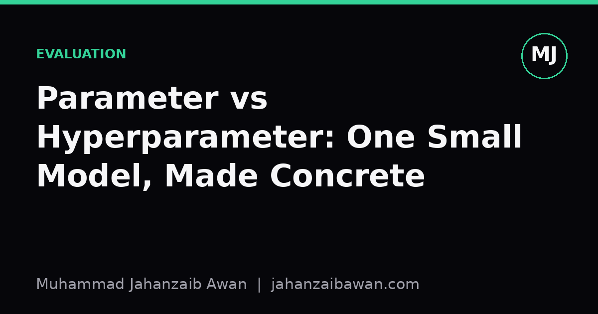

Parameter vs Hyperparameter: One Small Model, Made Concrete
A linear regression with a single slope and a single regularisation strength is enough to see exactly what the model learns and what you, the modeller, must decide.

Why this distinction keeps causing trouble
I still see the words parameter and hyperparameter used almost interchangeably in casual conversation, and it rarely matters until it suddenly does. The moment it matters is evaluation. If you tune something on the same data you later report a score on, and that something is actually a hyperparameter rather than a parameter, you have leaked information from your test set into your model selection process, and your reported accuracy is quietly optimistic. This is one of the most common silent bugs in applied machine learning, and it is entirely avoidable once the distinction is clear in your head.
The cleanest way I know to fix this in intuition is to shrink the problem down to something small enough to compute by hand, or at least close to it. So rather than reasoning about a neural network with millions of weights, I want to use a single feature linear regression with ridge regularisation. It has exactly one parameter worth discussing, a slope, and exactly one hyperparameter, the regularisation strength. Everything that is true about parameters and hyperparameters in large models is already true here, just without the noise of scale.
Once you can hold this small example in your head, the general rule falls out naturally: a parameter is a quantity the learning algorithm sets by looking at the training data, through some optimisation procedure, and a hyperparameter is a quantity you, the practitioner, fix before that optimisation even starts. The model cannot choose its own hyperparameters from training data alone, because doing so would always favour whichever hyperparameter lets it fit the training data best, which is a recipe for overfitting.
The worked example: slope and lambda
Suppose I have ten data points relating hours of sleep to a reaction time score, and I fit a ridge regression of the form predicted score equals slope times hours, plus an intercept, with a penalty term lambda multiplied by the square of the slope. The training process, typically solved analytically or via gradient descent, finds the slope and intercept that minimise squared error on those ten points plus the penalty. Say it finds a slope of minus 4.2 and an intercept of 90. Those two numbers, slope and intercept, are the parameters. They were learned; nobody typed them in.
Now, lambda is different. I did not learn lambda from the training data by minimising the same loss, because if I did, the optimiser would always set lambda to zero, since a penalty of zero always fits training data at least as well as any positive penalty. Lambda has to be fixed from outside the training loop. Maybe I try lambda equals 0.1, lambda equals 1, and lambda equals 10, refit the slope and intercept under each, and see which lambda gives the best performance on a held out validation set of, say, three further points that the training process never touched. Suppose lambda equals 1 wins, giving a validation error of 2.3 reaction-time units versus 3.1 for lambda equals 0.1 and 4.0 for lambda equals 10.
That selection step, comparing three candidate lambdas against validation data, is the hyperparameter search. Lambda equals 1 is now fixed, and only then do I refit the slope and intercept on this lambda, using training data, to get my final parameters. Notice the two-tier structure: an inner loop that learns parameters given a fixed hyperparameter, and an outer loop that chooses the hyperparameter by checking how the inner loop's output performs on data it has not fitted. Collapse those two loops into one and you lose the entire point of the exercise.

Why the inner and outer loop must use different data
Here is where it gets practically dangerous rather than just conceptually tidy. If I had chosen lambda by checking which value gives the lowest error on the same ten training points used to fit slope and intercept, I would have reproduced the exact failure mode ridge regression was invented to prevent: lambda equals zero would always look best on training error, because less regularisation always fits the training points at least as tightly. The penalty exists precisely to trade a little training fit for better generalisation, so judging it by training fit defeats its purpose entirely.
This is why practitioners split data three ways in careful work: training data for fitting parameters under a given hyperparameter, validation data for choosing between hyperparameters, and a test set that is touched exactly once, at the very end, to report an honest final number. In my ten-plus-three-point toy example this looks almost silly, splitting thirteen points three ways, but the logic scales without changing. With k-fold cross-validation the same roles exist, just rotated across folds: parameters are refitted inside each fold, and the hyperparameter is scored by averaging validation performance across folds before a single hyperparameter value is chosen for the full dataset.
The temporal and procedural ordering is the part that matters, not the sample size. A hyperparameter chosen by looking at test performance, even once, even informally, even just to decide you are happy with the result, has contaminated that test score's usefulness as an unbiased estimate. This applies equally to lambda in ridge regression, learning rate in a neural network, number of trees in a forest, or the number of layers you decide to use after noticing that four layers happened to beat three on your test split.
The practical takeaway
The rule I now apply automatically: if a quantity is set by minimising a loss function on training data through calculus or gradient descent, it is a parameter. If a quantity is set by a human decision, a grid search, or a search algorithm that evaluates candidates against held-out data, it is a hyperparameter, and its selection constitutes a second, outer experiment that deserves its own clean data split. Parameters live inside the model's weights, hyperparameters live inside your experimental design.
In the small ridge regression example, the slope and intercept are what the algorithm learned for you; lambda is what you decided and then checked. Scale that model up to a deep network with millions of weights and a dozen hyperparameters such as learning rate, batch size, number of layers, and dropout rate, and nothing about the underlying logic changes, only the bookkeeping gets harder. Keep the inner loop and outer loop separated by data that genuinely has not been seen by the earlier stage, and your reported numbers will mean what they claim to mean.